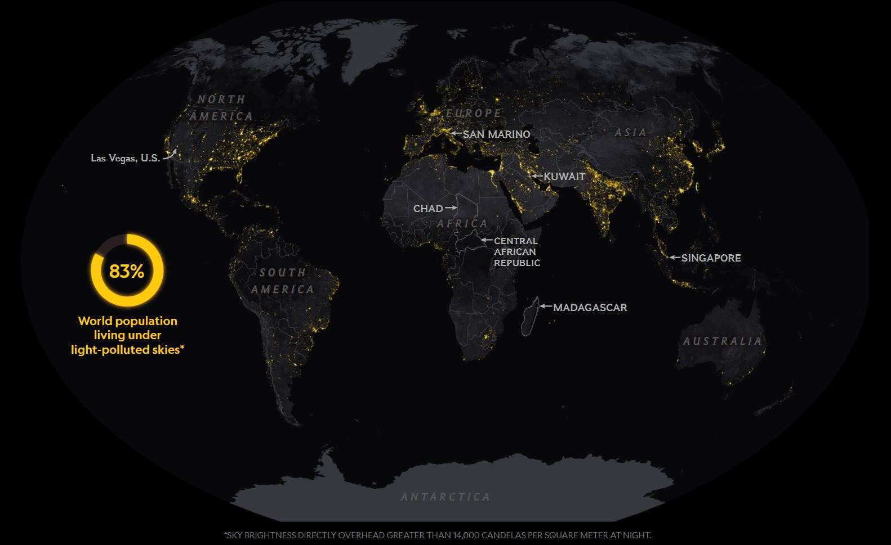
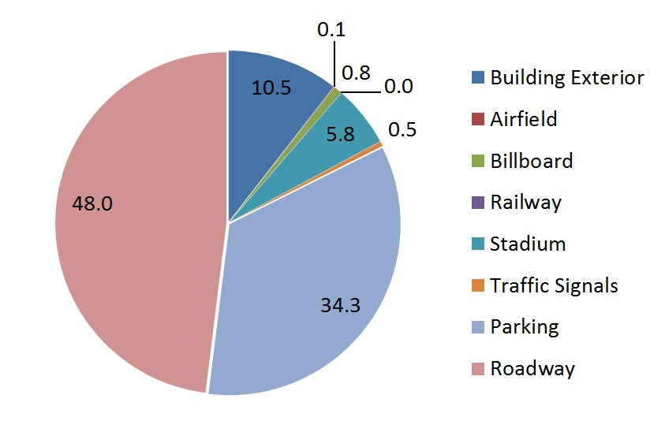

“The brightness map reveals that 83% of the world's population, and 99% of Europeans and people in the US, live under skies nearly 10% brighter than their natural starry state. For some, though the artificial glow was even greater,” said Dr. Kyba. (BBC News)
“About 14% of the world's population don't even use their night-time vision," he explained. (BBC News)
"Twenty percent of the people in Europe and 37% of the people in the US don't use their night vision," said Dr. Kyba. (BBC News)
"When Los Angeles recently replaced more than 150,000 streetlights with LEDs, the city saved roughly 8 million dollars annually, or more than 60 percent on energy costs."(NatGeo)
Switching to these more friendly light sources can save up to 70% of one's light bill
A 2007 IDA study estimated that 30% of all light emitted is wasted, which equates to 22 Terawatt hours/year, About 3.6 million tons of coal per year, about 12.9 million barrels of oil per year
The total amount of wasted electrical energy each year is enough to illuminate over 11 million homes and power over 777,000 cars.
The International Dark-Sky Association (IDA) estimates that excessive nighttime lighting releases more than 12 million tons of carbon dioxide, the most serious greenhouse gas, into the atmosphere each year. It would take nearly 702 million trees to absorb the carbon dioxide produced by wasted light.
"Depending on the method employed, dimming can also reduce energy demand by 40% and maintenance costs by 50%.68 Although centralised management systems can be more expensive to install, the payback time can be as little as 4-5 years.(Artificial Light in the Environment Report, UK, Page 26 ISBN: 9780108508547)

This diagram shows the percentage of the world that currently lives under light pollution. (NatGeo)

This shows the different ways the light usage in an urban area and what percentage of pollution they cause in the city. (Lighting Analysts Illumination Engineering Software)